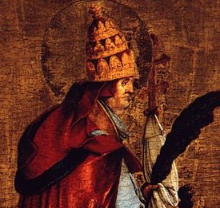

St. Cornelius
St. Cornelius (251-253), after the martyrdom of Pope Fabian in 250, was elected—against his will—by sixteen bishops, with the approval of the people. Against a rival candidate, Novatian, he was supported by St. Cyprian of Carthage, with a hundred other African bishops, by St. Dionysius of Alexandria, and by sixty bishops of Italy. St. Cornelius approved of St. Cyprian's restoration of the lapsed to communion after due penance; and the letters exchanged between Cornelius and Cyprian provide solid argument for papal supremacy. In 253 persecution broke out again; and Cornelius died a martyr.
McSorley, Joseph. An Outline History of the Church by Centuries (from St. Peter to Pius XII). 2nd Ed. 1944.